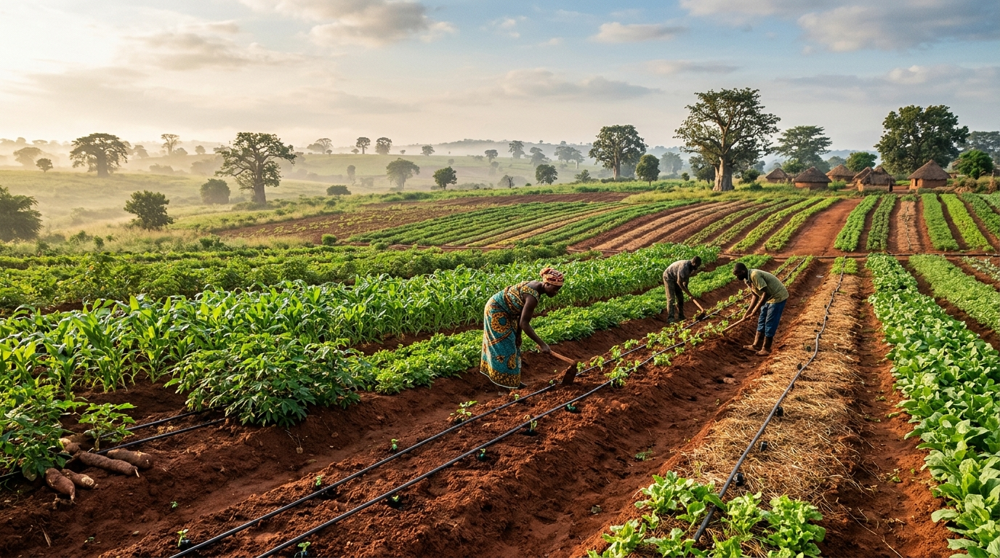
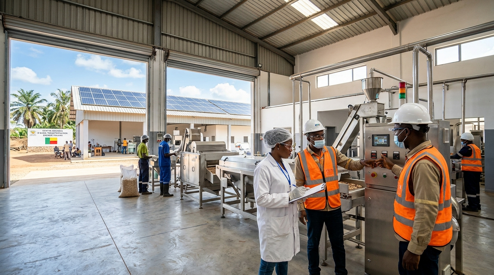

8 ans d'expérience et d'interventions directes
Huit années d'audits, de diagnostics agronomiques et d'accompagnement direct sur le terrain en Afrique de l'Ouest auprès des acteurs publics et privés.
Depuis huit ans, j'arpente le terrain en Afrique de l'Ouest pour concevoir, auditer et structurer des projets climatiques à fort impact. À travers mon entreprise Climate Invest et mon mandat de jeune délégué du Bénin à la COP31, je défends une vision claire : mettre l'Article 6 de l'Accord de Paris et les technologies MRV au service d'une finance carbone souveraine, rigoureuse et créatrice de valeur pour nos territoires.
Télécharger ma carte de visite (vCard)Je consacre mon parcours aux mécanismes concrets qui permettent de financer, d'auditer et de valoriser l'action climatique en Afrique de l'Ouest. À la présidence de Climate Invest, j'associe une exigence technique sans compromis et la maîtrise des négociations multilatérales pour accompagner nos entreprises, nos institutions et nos porteurs de projets vers des résultats tangibles et mesurables.
Huit années d'audits, de diagnostics agronomiques et d'accompagnement direct sur le terrain en Afrique de l'Ouest auprès des acteurs publics et privés.
Je structure les mécanismes de coopération bilatérale, les transferts d'ITMOs et les modèles de valorisation carbone qui protègent la souveraineté de nos États tout en attirant des capitaux privés d'envergure.
Je pilote la numérisation de la mesure, de la notification et de la vérification de l'impact carbone selon les standards internationaux les plus rigoureux (ISO 14064, GHG Protocol).
Mon mandat diplomatique
J'ai l'honneur d'avoir été sélectionné pour représenter la jeunesse béninoise à la 31e Conférence des Parties sur les changements climatiques (COP31), organisée en Turquie.
À la table des négociations, je défends une diplomatie environnementale d'action : rendre les financements d'adaptation concrets pour l'Afrique de l'Ouest, sécuriser l'application de l'Article 6 et valoriser le potentiel écologique et économique de nos territoires.
J'ai été désigné lauréat du concours d'excellence organisé au Bénin pour désigner les délégués investis dans l'ingénierie et l'action climatique.
Phase 01 - Concours nationalJ'ai suivi un cycle préparatoire rigoureux sur les règles de négociation de la CCNUCC, les mécanismes de l'Article 6 et la diplomatie environnementale.
Phase 02 - Négociations CCNUCCJe siégerai au sein de la délégation béninoise à la COP31 pour négocier des mécanismes concrets d'adaptation et des flux de finance durable équitables pour l'Afrique.
Phase 03 - Sommet COP31
Mon entreprise & mon outil d'action
J'ai fondé et je préside Climate Invest pour doter l'Afrique de l'Ouest d'un cabinet d'ingénierie, d'audit et de finance durable de référence. Avec mes équipes au Bénin, nous accompagnons les entreprises, les porteurs de projets et les institutions dans la mesure, la certification et la valorisation financière de leurs actifs climatiques.
Partenaire technique privé de terrain
Climate Invest intervient comme opérateur technique d'exécution et intégrateur MRV pour concrétiser les objectifs de la CDN 3.0 du Bénin, en synergie avec le cadre institutionnel. Pour tous nos projets, les transferts d'ITMOs relèvent de la souveraineté stricte de l'État.
Avec mes équipes, j'identifie, je modélise et je sécurise vos réductions d'émissions pour les valoriser selon les standards les plus exigeants du marché carbone international.
Je conçois des feuilles de route de décarbonation réalistes, ambitieuses et conformes aux exigences strictes de l'ISO 14064 et du GHG Protocol.
J'interviens sur le terrain avec Climate Invest comme partenaire technique de référence en appui direct aux objectifs de la CDN du Bénin et à l'Article 6 de l'Accord de Paris.
Mon action opérationnelle de terrain
Trois programmes d'envergure que nous déployons concrètement au Bénin pour conjuguer agriculture résiliente, régénération des sols et décarbonation productive.
J'accompagne les producteurs sur 100 hectares de bas-fonds rizicoles par l'irrigation alternée AWD (Alternate Wetting and Drying) : nous réduisons d'environ 45 % les émissions de méthane tout en numérisant le suivi MRV pour certifier leurs efforts.
 Prix Union Africaine
Prix Union Africaine
Je pilote le diagnostic agronomique et l'amendement en biochar sur 1 000 hectares pour régénérer durablement la fertilité de nos sols et quantifier la séquestration de carbone organique (SOC MRV) selon des protocoles stricts.

J'appuie directement les dirigeants de 30 PME et agro-industries béninoises dans la réalisation de leurs bilans d'empreinte carbone ISO 14064-1 et la co-élaboration de trajectoires de décarbonation opérationnelles et rentables.
* Les chiffres indiqués décrivent le périmètre opérationnel de nos interventions. Le calendrier et l'état d'avancement détaillé vous sont communiqués sur simple demande.
Rejoignez l'aventure
Le MoU est la porte d'entrée unique du programme post-COP31. Choisissez l'option correspondant à votre statut pour activer votre signature.
Une question avant de vous engager ?
Écrivez-nous sur WhatsAppConsultants, experts indépendants, chercheurs
100€
Activer le MoUPME locales, ONG, cabinets, coopératives
300€
Activer le MoUAprès validation du MoU
Une séance de travail stratégique, planifiée à tête reposée, pour donner une suite concrète à votre engagement.
Votre manifestation d'intérêt est enregistrée et votre signature activée.
Il vous est transmis automatiquement pour réserver le créneau qui vous convient.
Une à deux semaines après la COP31, pour étudier le passage à l'échelle ou stabiliser votre engagement initial.
Confidentialité : les données brutes et les fichiers SIG ne sont transmis qu'en cas de contrat ferme, sous accord de confidentialité (NDA).